7组对应内容，分别录制 · 2026-11-27 · 未修改现有代码
res_1126 腔体内外录音频谱分析 分析日期：2026-11-27（Asia/Shanghai） 结论 可以在 singlemic 中用少量二阶 IIR 均衡器改善低频偏重、高频偏弱的音色。当前数据支持先做保守的宽带均衡与低频清理；不支持把两路频谱之比直接当成腔体传递函数，更不支持按约200 Hz的主峰做固定深陷波。 这里的“改善”是可检验的工程建议，并未用听音、语音识别准确率或主观评分证实。 录音与比较边界 共7组14份文件，全部纳入。用户已确认：同一个人朗读text中对应编号的同一段话，腔体内外分开录制；本报告以频域比较为主。raw为16 kHz、单声道、32位容器WAV（PCM24有效数据左对齐）；GT为48 kHz、双声道AAC/M4A。 两次说话的基频、语速、发声力度和位置可以不同；GT设备的麦克风频响、增益、AGC/降噪及AAC也可能影响结果。不能把全部差异归因于腔体。 raw时长18.61~63.36 s，GT时长12.86~42.73 s。原始时间轴分别保留，不拉伸录音来制造同步。样本互相关峰仅约0.018~0.037，与“分开录制”一致；不计算基于逐点同步的传递函数、PESQ或SI-SDR。 方法 GT解码后双声道取均值，并抗混叠重采样到16 kHz；只比较双方共有的0~8 kHz。另检查GT左右声道，避免仅由下混造成结论。raw按PCM32满量程正确缩放，不把24位有效数据误当成低音量。 主结果为全录音Welch平均功率谱：2048点Hann窗、512点步长、75%重叠、每帧去均值，频率网格7.8125 Hz。整段电平、全零段和峰值检查使用全部样本。 为了减少不同设备增益的影响，将每段谱的500~2000 Hz积分能量归一化，再按编号计算频带能量比的dB差。此参照频带是人为选择，不等于腔体在这里无影响；正值表示raw相对偏强，负值表示相对偏弱，不能解读为绝对声压增益。 七组统计以“录音”为单位等权计算中位数、四分位间距和范围，不把大量重叠帧当作独立重复。 敏感性检查：各自选100~7000 Hz能量最高的60%帧（非语音检测VAD），以降低不同停顿长度的影响。最低能量10%的非近零帧只作安静段代理，不能当成独立背景噪声，也不据此报告真实SNR。 频谱结果 补充：100 Hz以下与“低通/高通”的区分 用户指出的第一主瓣前频段确实偏强。仍以各段500~2000 Hz能量为参照，全段分析中，raw相对GT的20~50 Hz中位差为+24.09 dB，50~80 Hz为+11.15 dB，80~100 Hz为+2.64 dB；20~100 Hz合计为+12.00 dB。较响帧复核的方向一致。 这些是相对频谱差，可能同时反映raw低频扰动、GT设备自带低切和两次发声差异；GT在低频本就很弱，不能要求EQ照着24 dB差值全量补偿。raw的100 Hz以下只占全段总能量约0.25%~1.11%；因此它值得清理，但不能仅处理这一段而忽略200~500 Hz音色偏重。 术语：高通（低切）削弱低频、通过高频；低通（高切）削弱高频、通过低频；低架/高架均衡可以温和调整两端而不完全切除。 当前源码的去直流近似H(z)=(1-z^-1)/(1-(255/256)z^-1)，截止约10 Hz。其理论增益在20/40/100 Hz分别约-0.95/-0.24/-0.026 dB，在1/4 kHz均约+0.017 dB，基本平坦。整数舍入与饱和使实际处理并非理想无限精度LTI系统，但这个小信号响应足以说明：当前高通没有造成1~8 kHz的大幅衰减。 当前倍率为1，五抽头降采样低通处于旁路。不能通过“削弱现有高通”补回高频；若要保留更多低音，比较额外50 Hz与70 Hz低切即可，主修正仍建议宽带PEQ和温和高架。若本批录音的烧录版本不同，应先核对当时的版本与采样设置。 低通/高切会进一步削弱本已偏弱的高频，因此不建议新增低通来解决当前描述的问题。 补充图见figures/04_sub100hz_and_current_dsp.png，细分数据见tables/12_sub100hz_comparison.csv与13_current_dc_blocker_response.csv。 频段(Hz) | raw相对GT中位差(dB) | 7组最小~最大(dB) | 较响60%帧的中位差(dB) 80–200 | -0.99 | -3.85 ~ +2.97 | -1.54 200–500 | +6.22 | +2.06 ~ +10.33 | +5.79 500–1000 | +0.68 | +0.22 ~ +1.22 | +0.38 1–2k | -4.21 | -6.08 ~ -2.26 | -2.37 2–4k | -8.15 | -10.79 ~ -3.88 | -6.18 4–8k | -14.59 | -16.29 ~ -11.22 | -12.38 200~500 Hz在全段比较中7/7偏强，中位约+6.2 dB；在较响帧比较中仍7/7偏强，中位约+5.8 dB。低中频过重是比较稳健的方向。 2~4 kHz全段比较中7/7偏弱，中位约-8.2 dB；较响帧中6/7偏弱，中位约-6.2 dB。4~8 kHz全段中位约-14.6 dB，较响帧中位约-12.4 dB。不要据此把高频直接提升12~15 dB：这也会放大噪声，且分开录制与设备处理可能贡献差异。 raw较响帧主峰约187.5~218.8 Hz，GT约140.6~171.9 Hz，且峰随时间变化。这些峰包含人声基频及谐波，不足以证明存在固定约200 Hz的腔体共振。频率网格精度也不等于物理共振频率的估计精度。 全段与较响帧结果不完全相同，表明停顿、安静段和说话方式会影响估计。GT左右声道比较值见tables/07_gt_channel_sensitivity.csv，独立麦克风通道也不能代替腔体对照实验。 数据完整性 raw第2组在0.53675 s起出现7752点连续全零（484.5 ms，恰为102个76点块）；第3组在0.532 s起出现5776点全零（361.0 ms，76个76点块）。每段末尾另有76点全零（4.75 ms）。 这些形态与接收器按76帧包补零的逻辑相符，但缺少同期收发日志，不能仅凭WAV确定丢包原因或精确丢包计数。滤波器不能恢复这些缺失内容。 raw第2/4/5/6/7组分别有8/38/22/29/1个样本触及PCM24精确满量程；第1/3组为0。触轨数量很少，不能说全部录音严重削波，但已提示峰值裕量不足。触及满量程也不能单独区分声学过载、采集饱和或数字限幅。 电平dBFS是数字电平，不是声压级；不同设备的RMS大小不等于麦克风灵敏度或录音质量。 滤波器选用建议（起始值，需等响听音后调整） 1. 首选少量串联biquad二阶IIR；优先宽带音色修正，运算量和延迟适合16 kHz单麦克风流式路径。暂不需要长FIR或高阶精确逆滤波。 2. 可选二阶Butterworth高通，截止60~80 Hz（示例70 Hz，约12 dB/oct）。用途是削弱低频扰动；已有约10 Hz去直流并不能代替这一级。不要直接把截止设到150~200 Hz，会明显削弱低音基频与自然度。 3. 优先试听宽带PEQ削减：中心约250 Hz，Q=0.7~1.0，增益-3~-6 dB。示例250 Hz/Q0.8/-4 dB。作用是缓和200~500 Hz偏重，不是锁定某个已测得的腔体共振。也可与低架均衡作A/B比较；不要同时叠加过多低频削减。 4. 高频用温和高架均衡：转折约1.5~2 kHz，先+3~+4 dB，确认齿音和底噪后最多试到+6 dB。不要追着统计频谱差完全补偿。若听感变薄或嘶声明显，应减小提升，必要时只做低频削减。 5. 为均衡器留约6~9 dB数字余量；示例链采用-6 dB前级衰减，再做HPF70 + PEQ250/Q0.8/-4 dB + 高频架1.5k/+4 dB。源端已削波或缺失的样本不会因此恢复。 6. 不建议默认加50/100 Hz陷波，也不建议固定190~220 Hz窄陷波。先用静音录音或扫频证实稳定窄带干扰；有明确窄线后才按实际频率和带宽选notch。普通“iirpeak”带通谐振器不能直接代替可调增益的PEQ。 7. 不建议为“降噪”直接做3.4 kHz低通：当前主要问题是高频不足，这会进一步损失清晰度。也没有足够证据要求使用卡尔曼、自适应滤波或强降噪模型。 建议的下一次验证 保持声源位置、播放音量和麦克风方向固定，用同一段扬声器播放语音，尽量同步记录腔内外；若要单独隔离腔体作用，优先使用同一型号麦克风与固定增益，交换麦克风位置排查单体差异，并关闭可关闭的AGC/降噪。 再补录固定电平扫频/宽带噪声与10~20 s无声源背景。这样才能区分声源基频、腔体共振和设备噪声，设计带正则化、限制最大提升的补偿EQ。对腔内录音的原声与EQ处理做等响A/B，评价自然度、清晰度、噪声与识别效果。 若高频在声学入口处已大量损失，优化开孔、声道和麦克风安装通常比大幅提升高频更有效。 文件索引 figures/01_spectral_summary.png：主频谱、七组频带差异、能量分布。 figures/pair_01_details.png ~ pair_07_details.png：每组归一化频谱叠加、频带差异、时频图与全段/较响/安静代理频谱。时频图均用同一绝对色标；两列时间轴是各自原始时间，空白处不代表补零。时频图用于观察频率成分随时间变化，不用于逐点同步比较。 figures/02_recording_quality.png：时长、电平、触轨及连续全零。 figures/03_candidate_filter_response.png：建议起始方案的理论响应，非实测逆滤波。 tables/：电平、频带能量、逐频点功率谱、编号比较、全零片段、对齐诊断、左右声道敏感性、候选方案余量等CSV，UTF-8 BOM便于Excel打开。 source_manifest.json：14份录音的SHA256与基本信息。 methods.json：分析参数、软件版本和变换定义。 qa_notes.txt：数值、图表和源文件完整性核查。 范围 未修改singlemic、接收器或其他现有代码；只在新建分析目录写入图表、表格与报告。分析脚本运行于系统临时目录；未输出滤波固件。初次分析未输出试听音频；后续高频增强试听见high_frequency_boost_preview/listen.html。当前源码快照显示16 kHz逐点处理、约10 Hz一阶去直流，降采样倍率为1，五抽头抗混叠FIR当前不经过；不能仅据当前源码证明这批录音的烧录版本完全相同。 方法参考 SciPy Welch说明：https://docs.scipy.org/doc/scipy-1.12.0/reference/generated/scipy.signal.welch.html W3C Audio EQ Cookbook（PEQ和shelf二阶结构）：https://www.w3.org/TR/audio-eq-cookbook/ Espressif ESP-DSP IIR/biquad接口：https://docs.espressif.com/projects/esp-dsp/en/latest/esp32/esp-dsp-apis.html SciPy notch说明：https://docs.scipy.org/doc/scipy/reference/generated/scipy.signal.iirnotch.html 后续补充：已按用户要求生成7组高频增强试听，每组原声/+3 dB/+6 dB，响度匹配，见high_frequency_boost_preview/listen.html。仅高架均衡，无新增低切或PEQ；既有代码和原始录音未修改。 后续补充：已在高频+3/+6 dB试听基础上，添加50/70 Hz二阶低切对比，共42份响度匹配音频和9张频谱/响应图，见high_boost_low_cut_preview/listen.html。原始录音、此前试听文件与现有代码均未修改。 后续补充：已从原始raw生成无高频增强的纯低切试听，含原声/50 Hz/70 Hz二阶巴特沃兹高通，共7组21份，组内响度匹配；见low_cut_only_preview/listen.html。
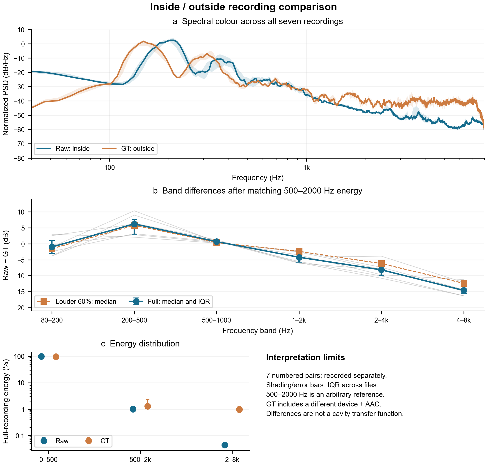
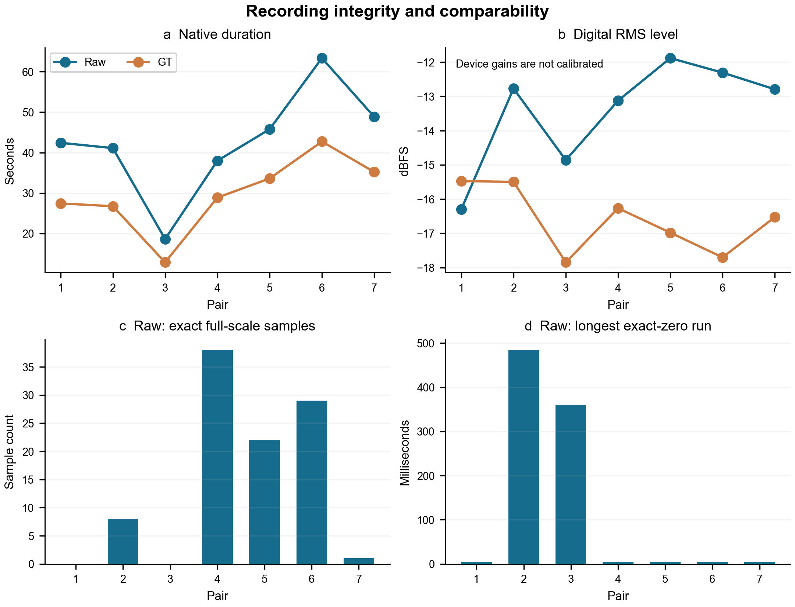
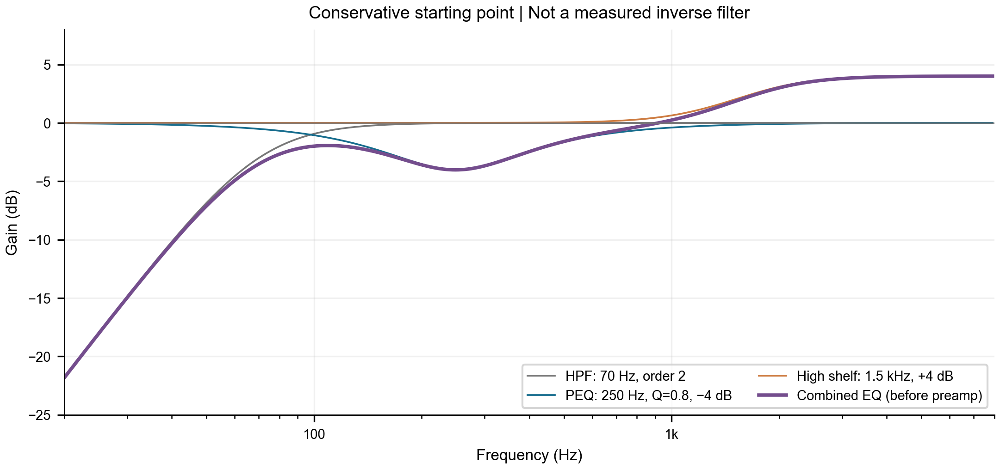
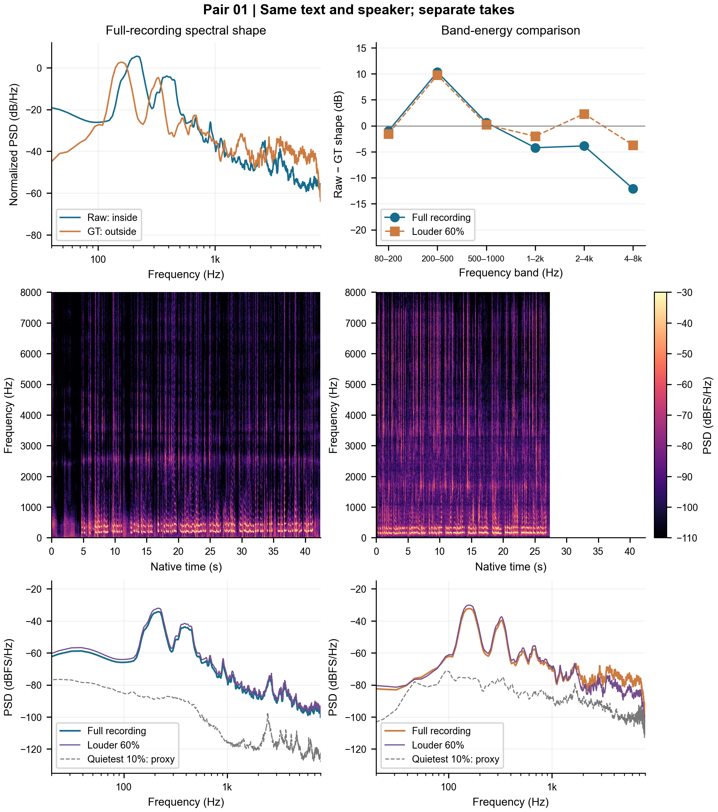
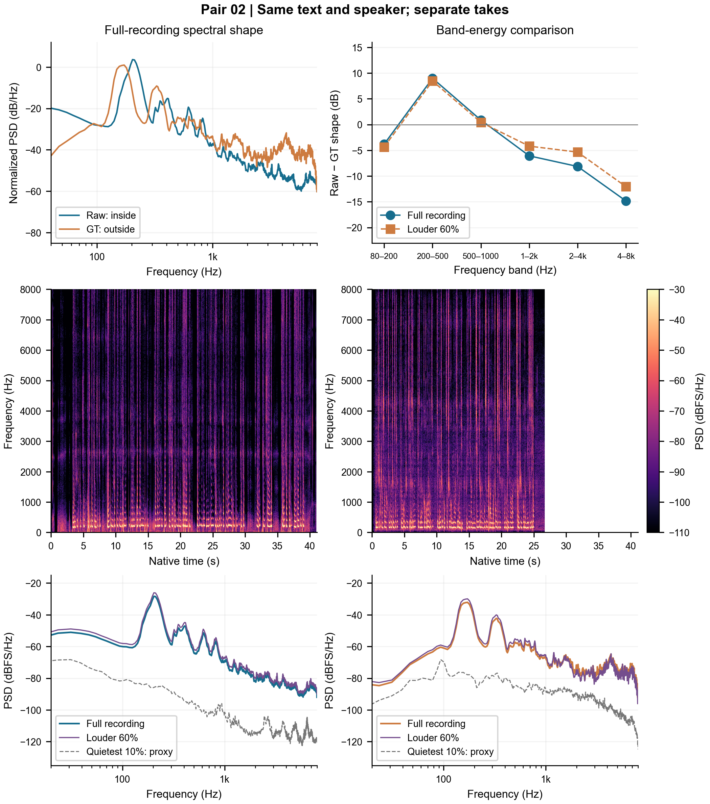
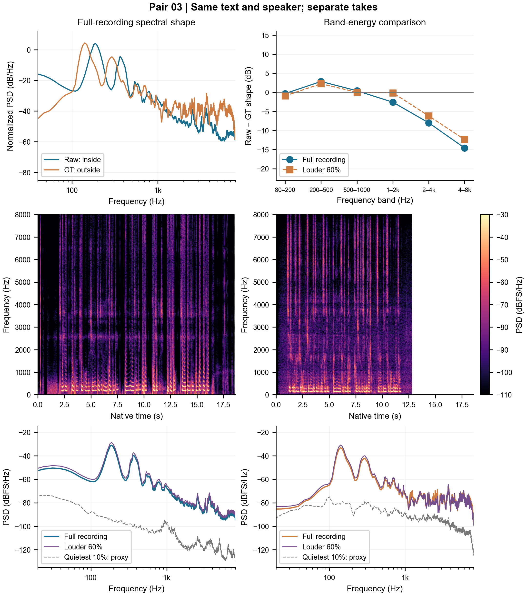
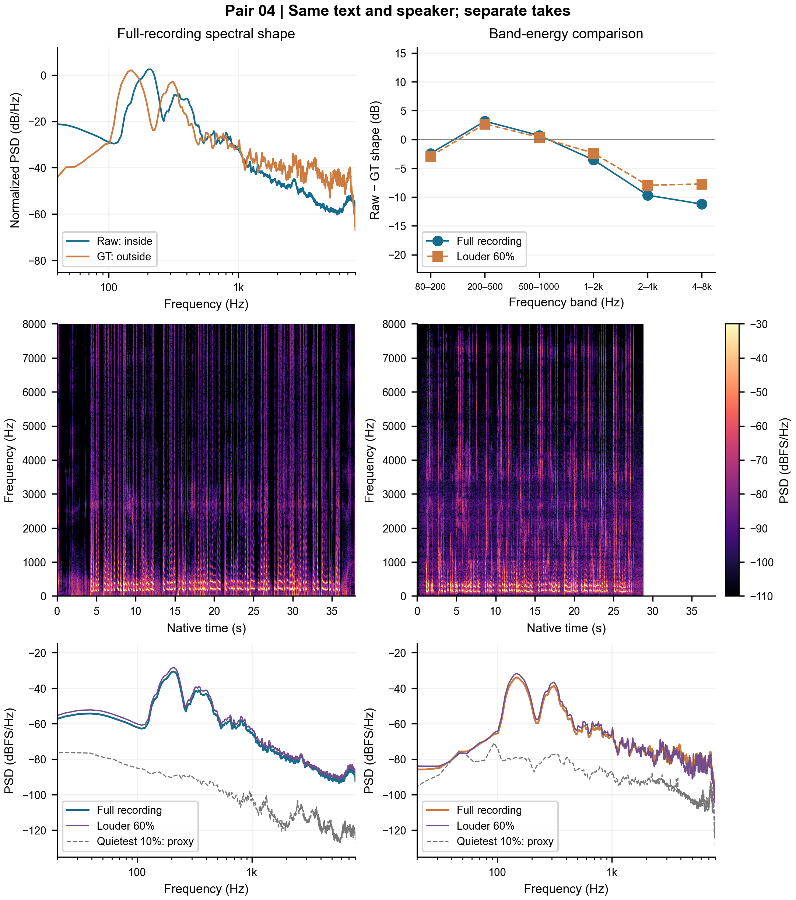
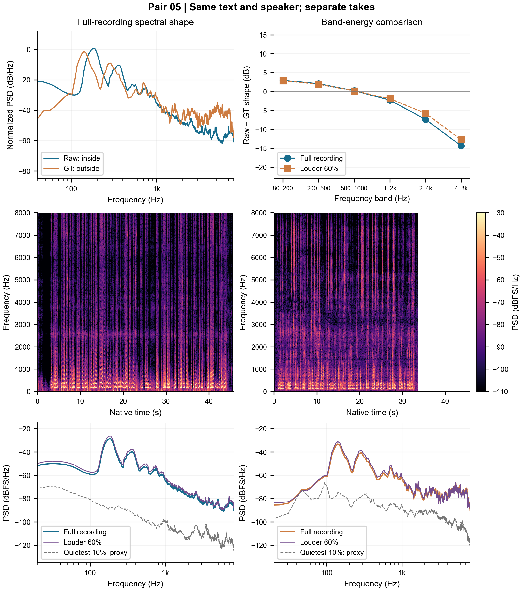
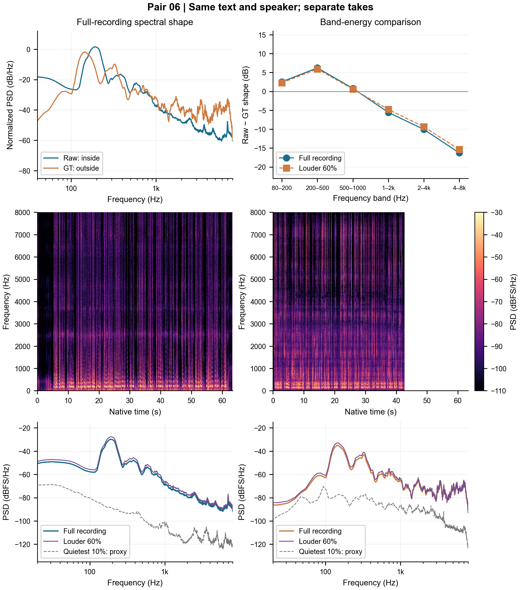
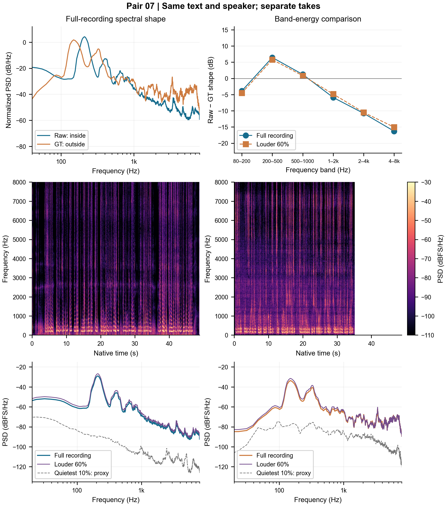
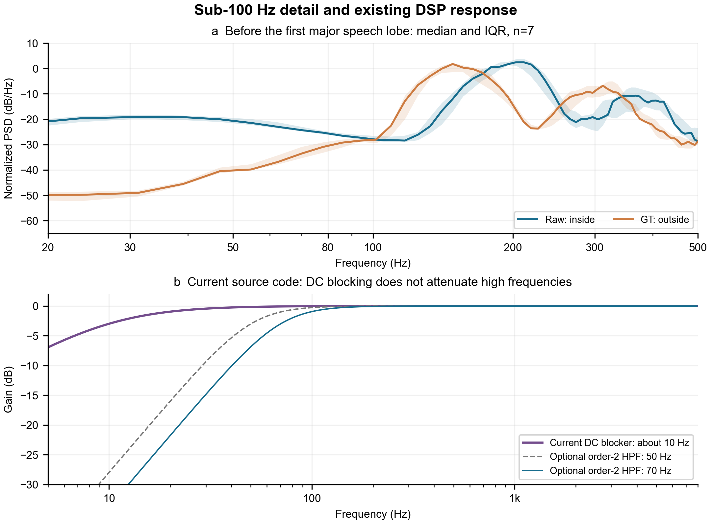